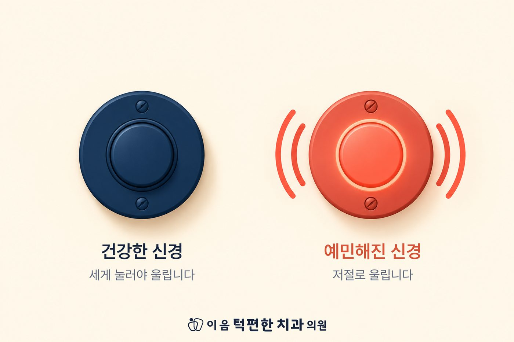

엑스레이·CT 같은 사진 검사는 뼈와 디스크의 '모양'을 보여줍니다. 통증은 신경이 보내는 '신호'입니다.
아픈 자극이 오래 반복되면 신경이 예민해져, 조직이 아물어도 통증이 남을 수 있습니다.
이 신경의 변화는 사진에 찍히지 않습니다. 그래서 검사 결과와 통증이 어긋날 수 있습니다.
갑자기 시작된 심한 통증, 붓기나 열, 입이 갑자기 안 벌어지는 경우는 다른 원인부터 가려내야 합니다.
엑스레이와 CT는 뼈의 모양을, MRI는 디스크의 위치를 보여줍니다. 전부 생김새에 대한 정보입니다.
그런데 아픔은 생김새에서 바로 나오지 않습니다. 관절과 근육에 깔린 가느다란 신경이 "문제가 있다"는 신호를 뇌로 보낼 때 아픔을 느낍니다. 그래서 디스크가 어긋나 있어도 아프지 않은 분이 있고, 사진이 멀쩡한데도 아픈 분이 있습니다. 차이는 신경이 얼마나 예민한가에 있습니다.
건강한 통증 신경은 세게 눌러야 울리는 경보기와 같습니다. 웬만한 자극은 그냥 넘기고, 다칠 만큼 센 자극이 와야 울립니다. 그래서 평소에는 씹고 말하고 하품을 해도 아프지 않습니다.
그런데 아픈 자극이 오래 반복되면 경보기의 기준이 내려갑니다. 가볍게 씹기만 해도 울리고, 나중에는 가만히 있어도 울립니다. 처음 통증을 만든 문제가 가라앉은 뒤에도 예민해진 경보기가 그대로 남아 통증이 이어지는 것입니다.
이것은 꾀병도, 기분 문제도 아닙니다. 신경에서 실제로 일어나는 변화이고, 치료로 되돌릴 수 있습니다.
눌리는 일이 줄면 경보기는 조금씩 원래 기준을 되찾습니다.
통증의 원인과 단계를 진찰로 가려낸 다음, 어떤 조합이 맞는지 정합니다. 오래된 통증일수록 가라앉는 데에도 시간이 걸리므로, 몇 주에서 몇 달을 두고 단계적으로 진행합니다.
검사에 보이지 않아도 통증은 실제입니다. 혼자 견디며 오래 두지 않으시기 바랍니다.
오래된 턱 통증으로 지치셨다면, 통증이 이어지는 이유부터 함께 확인해 드립니다.
전화 상담 02-6745-2754이 페이지는 일반적인 건강정보이며 개인의 진단이나 치료를 대신하지 않습니다. 증상이 지속되거나 갑자기 악화되면 의료기관에서 진료를 받으시기 바랍니다.